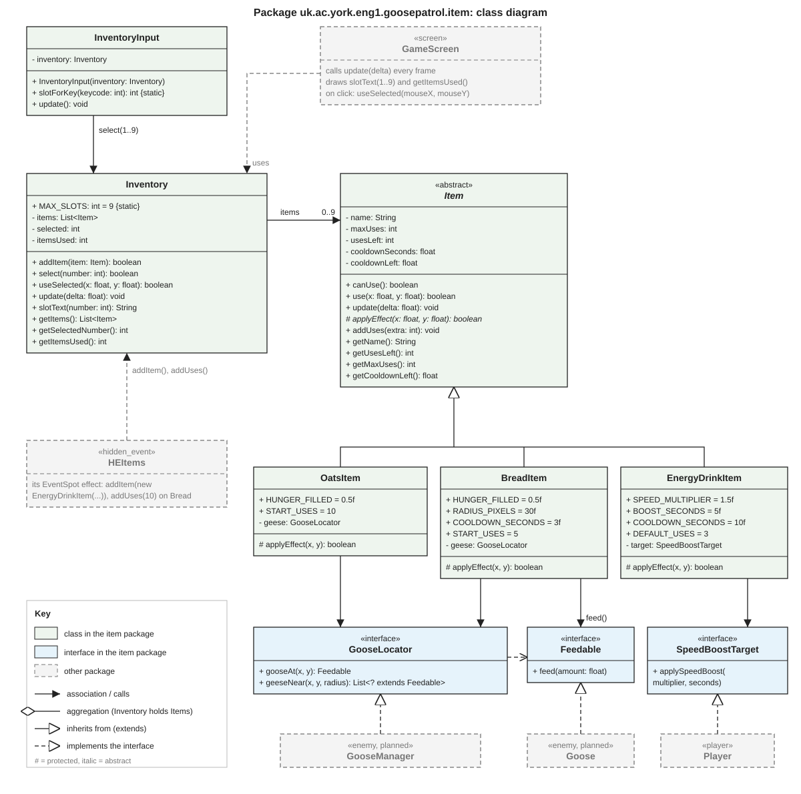
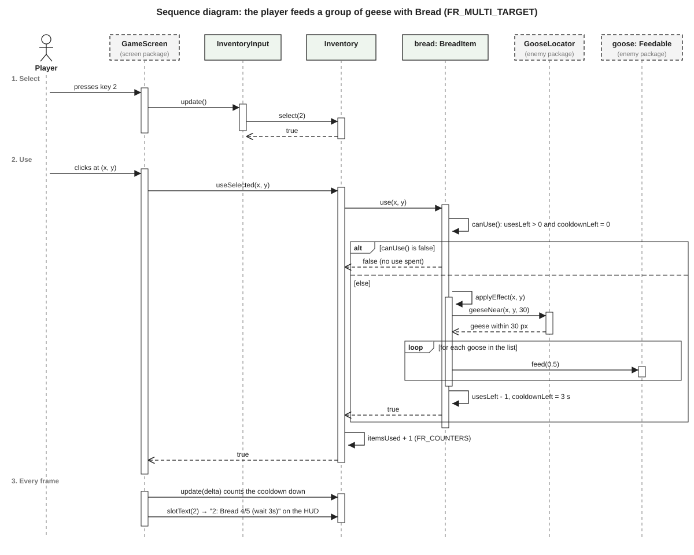

Architecture of the item package, written by its developer for the Arch1 report. It gives the structural view (class diagram), a behavioural view (sequence diagram), the class responsibilities (CRC cards), the reasons for the design, how it changed, and how it traces to Req1.
The package holds everything the player carries and uses: the abstract Item, three concrete items, the Inventory that holds up to nine of them, and the number-key input. It meets these requirements from Req1: FR_START_INVENTORY, FR_SINGLE_TARGET, FR_MULTI_TARGET, FR_CONTROLS (items with the mouse, slots with keys 1 to 9), FR_COUNTERS (items used), and the item side of FR_EVENT_EFFECT (an event can add items or uses). The constants for uses, cooldowns, radius and speed also serve QR_NEWBIE, QR_WINNABLE and QR_AVOID_EXTREME.
| Item | Type | Effect | Start uses | Cooldown | Requirement |
|---|---|---|---|---|---|
| Bag of Oats | single target | fills 50% of the hunger of the clicked goose | 10 | none | FR_SINGLE_TARGET |
| Bread | area | fills 50% of the hunger of every goose within 30 px of the click | 5 | 3 s | FR_MULTI_TARGET |
| Energy Drink | player boost | player moves 1.5x faster for 5 s | 3 | 10 s | FR_EVENT_EFFECT (given by the helping event) |
Item with a template method. use(x, y) holds the shared rules (uses, cooldown, only spend on success) once, and each item only writes applyEffect. A new item for Assessment 2 (for example the pick-up items in UR_MAP_ITEMS) is one new subclass, with no change to Inventory (open for extension, closed for change).GooseLocator, Feedable and SpeedBoostTarget. This keeps the item package free of the enemy and player code (dependency inversion), so it could be built and tested before the geese existed, and the enemy team can change how geese are stored without breaking the items.applyEffect returns a boolean. A click on empty ground does not cost an Oats use and is not counted. This keeps the "items used" counter honest (FR_COUNTERS) and avoids punishing new players (QR_NEWBIE).delta. Cooldowns count down in update(delta) rather than reading the clock, so they stop while the game is paused (the game screen simply stops calling it, FR_PAUSE_KEY) and can be tested without waiting.public static final fields, so play-testing for QR_WINNABLE and QR_AVOID_EXTREME changes one line, and the tests check the limits (for example the boost is at most 1.5x).slotText shows the uses and the wait time as text as well as the icon, which supports QR_ACCESS_CUES.
uk.ac.york.eng1.goosepatrol.item (UML, drawn as code with draw_items.py). Dashed grey classes belong to other packages and are not written yet, so their names may change.
alt frame shows that a use is only spent when the item can be used; the loop frame feeds every goose in the radius.Oats follow the same path, but applyEffect calls gooseAt(x, y) instead of geeseNear. If the click misses every goose, applyEffect returns false, so no use is spent and nothing is counted. The Energy Drink calls applySpeedBoost(1.5, 5) on the player and does not need the click position.
| Version | Date, commit | Design | Why it changed |
|---|---|---|---|
| v1 | 26 Oct, 2550c29 | Item.use() with no arguments and a void applyEffect(). Items: Bag of Oats and a Bread Picnic that drew geese to a blanket for some seconds, with a 20 s cooldown. | First draft from the item proposal. |
| v2 | 26 Oct, a63ccea, 28f4b2b | Added EnergyDrinkItem with the SpeedBoostTarget interface, and the Inventory with number keys, the use counter and slot text. | The helping hidden event needs an item that helps the player, and the HUD needs the counter (FR_COUNTERS). |
| v3 | 27 Oct, fcdc50b | use(x, y) and boolean applyEffect(x, y); the picnic became BreadItem, which feeds all geese in a 30 px radius at once; items find geese through GooseLocator; addUses added. | Items need to know where the player clicked (FR_CONTROLS). The picnic needed the goose AI to walk to a blanket, which tied two subsystems together; an instant area feed meets FR_MULTI_TARGET directly. A missed click should not waste a use. The helping event gives 10 more Bread through addUses. |
| v4 | 28 Oct, 40f2c8d | All item classes and tests moved into the item package. | The main package had become crowded; one package per component matches the component diagram (Arch v2). |
33 JUnit 5 tests cover the package (core/src/test/java/.../item). They use a fake goose world (FakeGeese) so they run without LibGDX or the real geese.
| Requirement | Where in the code | Tests that check it |
|---|---|---|
| FR_START_INVENTORY | Inventory.addItem, OatsItem, BreadItem | firstItemIsSelectedAtTheStart, newItemCanBeUsed |
| FR_SINGLE_TARGET | OatsItem.applyEffect using gooseAt | oatsFillHalfOfTheClickedGoosesHunger, oatsClickThatMissesEveryGooseIsNotSpent |
| FR_MULTI_TARGET | BreadItem.applyEffect using geeseNear | breadFeedsEveryGooseInTheRadiusButNotThoseOutside |
| FR_CONTROLS | InventoryInput, Inventory.select, useSelected(x, y) | numberKeysMapToSlotNumbers, selectingByNumberChangesTheSelectedItem, numbersWithoutAnItemAreIgnored |
| FR_COUNTERS (items used) | Inventory.itemsUsed | usingTheSelectedItemSpendsOneUseAndCountsIt, failedUseIsNotCounted, oatsClickOnEmptyGroundIsNotCounted |
| FR_EVENT_EFFECT (helping event) | Item.addUses, EnergyDrinkItem | aHiddenEventCanGiveTenMoreBread, addUsesGivesMoreUses, usingADrinkBoostsThePlayer |
| QR_AVOID_EXTREME | constants in each item | boostIsFasterButNotExtreme, cooldownIsLongerThanTheBoostSoBoostsDoNotStack |
| QR_ACCESS_CUES (text cue) | Inventory.slotText | slotTextShowsNumberNameAndUses, slotTextShowsTheWaitTimeDuringACooldown |
Feedable (feed(amount) lowers its hunger), and the class that holds all geese implements GooseLocator.SpeedBoostTarget.inventory.update(delta) and inventoryInput.update() each frame, calls useSelected with the mouse position in world coordinates, and draws slotText(1..9) and getItemsUsed().addItem(new EnergyDrinkItem(player)) and addUses(10) on the Bread.